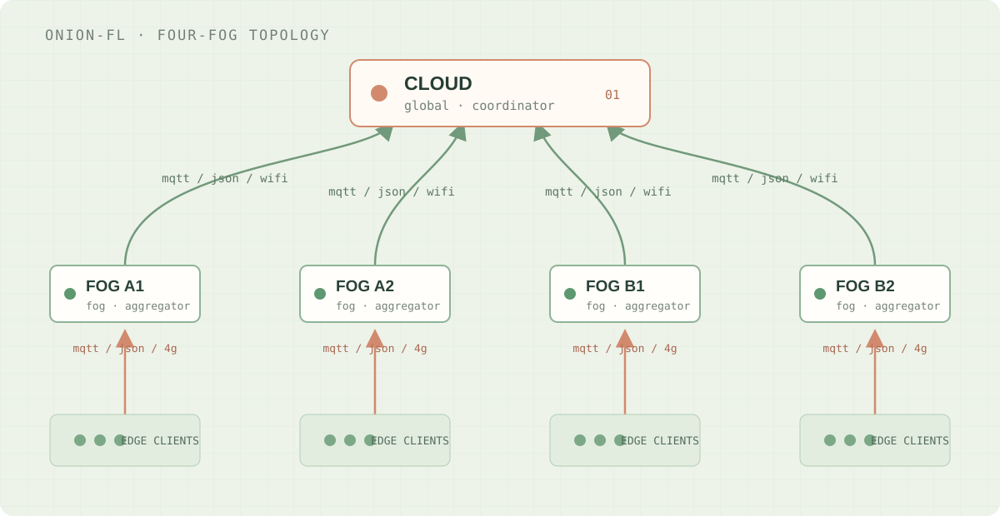
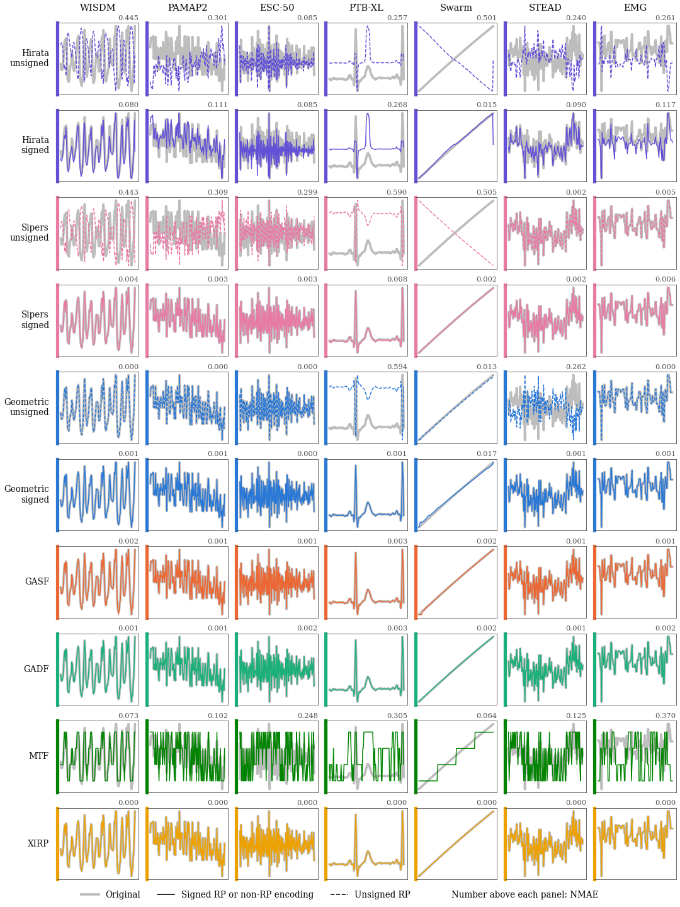
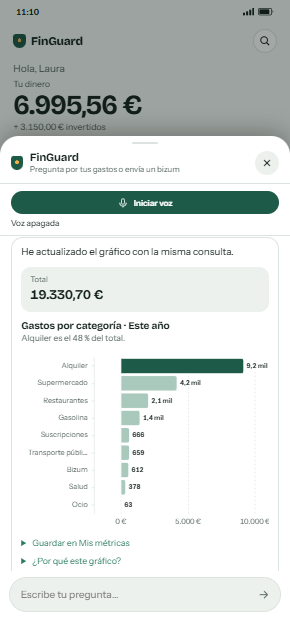
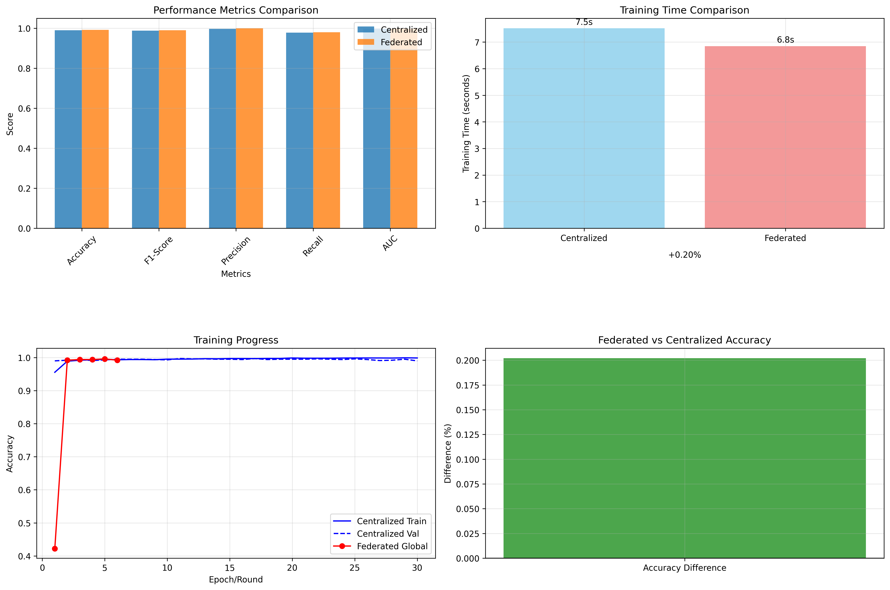

ONION-FL / FOUR-FOG TOPOLOGYSOURCE GRAPH ↗

Cloud → fog aggregators → edge clientsFour-fog topology from the Onion-FL repository
TOPOLOGYMQTTEDGE AI
Backend and data platforms in production. Federated learning and time-series research in the lab. I like bringing both worlds together.

Seven students from computing, social sciences, economics and biology built MoodPal together in the 48-hour IX HackForGood UGR. The interdisciplinary team won second prize and advanced to the national phase.
A federated-learning system I built, and a real figure from my time-series reconstruction research.


A selection of engineering challenges and research directions. Some work is proprietary; the ideas and technical decisions are what I can share.
Multi-provider IoT integrations, resilient ETL pipelines and backend services that connect fragmented real-world systems.
Seven datasets across six domains test how accurately time-series signals survive conversion to images and reconstruction from them.
A research framework for testing how federated model updates travel from edge clients through fog aggregators to the cloud.
Maintaining containerized platforms, CI/CD workflows, routing and observability for client-facing services.
MoodPal grew from a social-impact challenge into a product concept for two groups: people learning to manage emotions and psychologists offering support. Our interdisciplinary team designed emotion tracking, guided resources, a personalized chatbot and panic button, and won second prize at HackForGood UGR.

FINGUARD / LOCAL DEMO · SYNTHETIC DATAAsk about spending by text or voice, inspect a chart, or prepare a payment. The model proposes; deterministic services validate, and the user approves before execution.

FLOWER BASIC / ECG5000 · RE-EVALUATIONA Flower and MQTT fog-learning prototype, then a careful re-evaluation: the reported comparison was not significant and the dataset setup showed substantial leakage.
Brings MPC output-change and QuickCheck CAX CSVs into one filtered dashboard with tolerance checks and out-of-range statistics.
Manage members, seasons and matches together; match events and player stats feed standings and season-performance views.
↳ More experiments and technical notes are on the way. This is a curated selection, not an exhaustive project log.
I enjoy problems that don't fit neatly into a single job title.
Building maintainable microservices and connectors that turn varied APIs, devices and platforms into dependable products.
TypeScript / NestJS / Python / REST / RabbitMQMaking heterogeneous data useful through ingestion, ETL, time-series storage and analytics workflows.
ETL / IoT / MySQL / MongoDB / InfluxDB / AzureDeploying and operating containerised services with repeatable delivery, reliable routing and observability.
Docker / Kubernetes / GitLab CI/CD / Traefik / GrafanaInvestigating federated learning at the edge and rigorous methods for representing and reconstructing time series.
PyTorch / Federated Learning / Time Series / Edge ComputingHabits I picked up shipping and running real systems, most of them the hard way. The tools change; these don't.
When something breaks in production, I look before I touch anything. I gather evidence (logs, events, node state, diffs), write down a diagnosis and a proposed fix, and only then change things, with the people who own the system knowing what is about to happen. A fix nobody understood just becomes the next incident.
Before applying, I confirm that every image the change references exists in the registry, and I run a diff that should show only what I expect. During the rollout, I watch which node each pod lands on: a node low on disk will evict your pods while it pulls a 1 GB image. Afterwards, I test from the outside. “Running” is not the same as working.
Rollouts, image pulls and migrations are where incidents hide. I say up front what I’m waiting for and why. I use short timeouts with checks in between, and I report evictions, restarts or unexpected diffs as soon as they appear, not at the end.
Secrets live encrypted in the repository (SOPS + age) and a script applies them. Passwords go through stdin, never as arguments or into shell history. When I generate a credential, I fill it in and encrypt it in the same command, so a plaintext copy never touches the disk.
Schema changes can’t be rolled back, so they run against a local copy of the database first. I’m just as wary of scripts that stitch migrations together: a single missing trailing newline can silently turn the next statement into a comment.
The README holds the steps; next to it, I keep the gotchas that cost me time: line endings that break shell scripts, certificate files with no trailing newline, archive filenames that vanish when extracted on Windows. The next person, usually future me, shouldn’t pay for them twice.
For backend services I default to hexagonal architecture and CQRS, in NestJS and FastAPI. Every service uses the same layers, naming, structured logs and README template. I don’t do it for purity: it means any teammate can open any service and know where things are.
Before writing something, I check three things: does it need to exist, do the standard library or the platform already do it, and what is the smallest version that works. Every task goes from ticket to branch to merge request in small, atomic commits that someone can actually review.
I turn recurring procedures into playbooks that both people and AI coding agents can follow: onboarding a new tenant, building Power BI models as code on Fabric, writing data-lineage documents for clients. The agents follow the same rules as everyone else: production is read-only, verify before applying, no secrets in clear text.
Baselines, statistical tests and a hunt for leakage come before any celebration. When I re-evaluated my own federated-learning prototype, I found no significant difference from centralized training, and I found leakage in the dataset split. New research ideas go through an adversarial review that looks for prior work that would sink them.
I’m happiest when an idea stops being abstract and starts working.
That might mean tracing a stubborn bug, testing a different approach, or staying up too late on a side project because I want to see where it goes. Sometimes there’s a real problem to solve; sometimes the idea is simply too interesting to leave alone.
That curiosity takes me from backend and data systems to research in federated learning and time-series reconstruction. I like pulling things apart, comparing alternatives, and being honest about what works—and what doesn’t.
Some of that curiosity becomes side projects: apps for football communities, Monster Hunter-inspired pixel art, or little ideas that make software feel more playful. Outside the keyboard, I’m up for sport, football or a good game. I’m competitive, but I care just as much about good teammates, learning from people and making the next version better.
COMPUTER ENGINEER · RESEARCH COLLABORATORBASED IN SPAIN
Interested in engineering, applied research or collaborating on something ambitious? I'd love to hear about it.